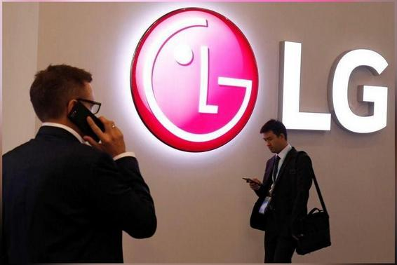
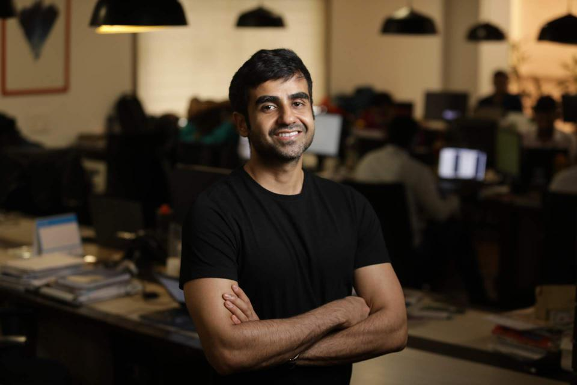

CoWIN doesn't collect data on people's COVID-19 history: GovtThe Union Health Ministry on Monday said that the CoWIN platform doesn't collect any information about the COVID-19 infection history of any person. "CoWIN has been built as a platform to manage vaccination in the country," it said. CoWIN enforces only those rules (relating to gaps between two shots) as announced by the Centre from time to time, it added. |
Appointed grievance officer as per new IT rules: Twitter to Delhi HCTwitter has told the Delhi High Court that it appointed a grievance redressal officer on May 28 in compliance with new IT rules. The HC was hearing a May 26 plea raising grievance that the officer's details couldn't be found for a complaint. Twitter said that as of the date of filing of the petition, the rules weren't complied with. |
WhatsApp appoints Paresh B Lal as Grievance Officer for IndiaWhatsApp has appointed Paresh B Lal as its Grievance Officer for India in compliance with the country's new IT rules. The new rules require significant social media intermediaries to appoint a Grievance Officer, a Chief Compliance Officer and a Nodal Contact Person. WhatsApp also shared details to contact Lal via post or through email on its website. |
|  |
LG stops making smartphones: ReportLG Electronics rolled off the last smartphones from its production line and the company will no longer manufacture handsets after Monday, Seoul-based newspaper Asia Business Daily reported. A Vietnam factory where LG built many of its smartphones will be converted into a household appliance manufacturing plant. Earlier, LG announced that it'll completely shut its mobile phone business by July 31. |
Google Photos' free unlimited storage ends todayGoogle Photos will no longer provide free unlimited storage for high-quality pictures from June 1, 2021, according to a policy announced by the company six months ago. Under the earlier policy, Google offered 15GB of free storage space divided across Gmail, Google Drive, and Photos. From June 1, photos will count towards the 15GB free quota. |
Cryptos' rising popularity great concern: Irish Central Bank execIreland's Central Bank executive Derville Rowland has said the rising popularity of cryptocurrencies such as Bitcoin is of "great concern". She added crypto-assets are "quite a speculative, unregulated investment" and people should be "really aware they could lose the whole of that investment". Earlier, Bank of England Governor Andrew Bailey had said cryptocurrencies are a danger to the public. |
|  |
Crypto's anonymity might be a threat to crypto itself: Zerodha CIONikhil Kamath, Co-founder and CIO of Zerodha, said that the anonymity of cryptocurrencies "might be a big threat to cryptocurrencies themselves". Kamath told Indian Express, "The need for something like Bitcoin is there...If all governments...continuously print currency, currency will get devalued at some point." However, he added, "I think cryptocurrencies are taking away power from governments." |
Govt's child rights body accuses Twitter of violating POCSO ActThe National Commission for Protection of Child Rights (NCPCR) has accused Twitter of providing misinformation and violating the POCSO Act. It has also said that an FIR has been filed against the micro-blogging platform. "We have written to Centre that children shouldn't be given access to Twitter till the platform is not safe for them," NCPCR Chairman Priyank Kanoongo said. |

|
Centre proposes to exempt registration certificate fees for EVsThe Ministry of Road Transport and Highways on Tuesday issued a draft notification proposing to exempt electric vehicles from payment of fees for the issue or renewal of registration certificate (RC) and assignment of new registration mark. The Ministry has sought comments from the general public as well as all the stakeholders within a period of 30 days. |
Amazon planning to enter India's satellite broadband space: ReportAmazon is reportedly planning to enter the satellite broadband space in India through its Project Kuiper satellite constellation. Billionaire Jeff Bezos-led company is likely to approach the government to discuss modalities, authorisations, permits, landing rights and satellite bandwidth leasing costs, the Economic Times reported. Amazon has approval from the US FCC to launch 3,236 satellites. |